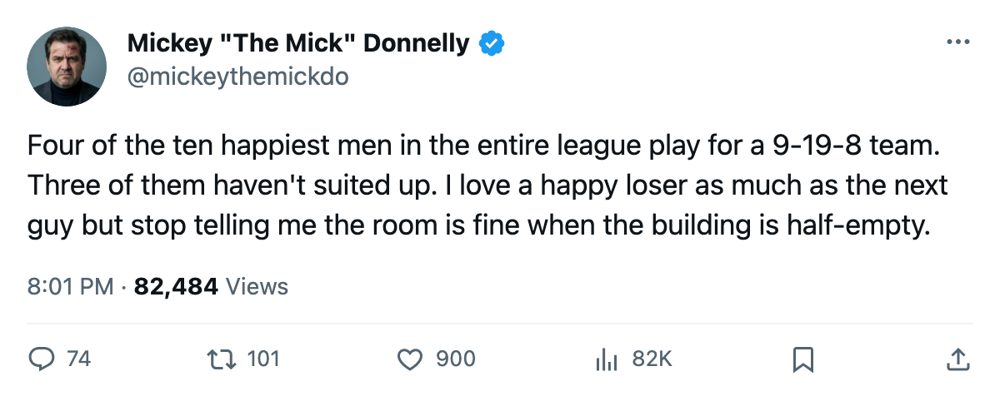
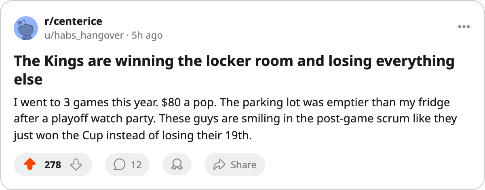

THE 4 HAPPIEST MEN IN LA AREN'T EVEN DRESSING. THE ROOM IS 97.7. THE RECORD IS 9-19-8.
Four Kings carry a 100 on the Bureau's Morale Scale. Three have no games recorded. The building is second-worst in this league. You're paying $80 for a smile.
 Mickey "The Mick" DonnellyColumnist, ex-goalie · The Penalty Box
Mickey "The Mick" DonnellyColumnist, ex-goalie · The Penalty Box
The LA front office: $59.22M for a country club

The piece
The  Los Angeles Kings Kings are 9-19-8. Thirty-six points. Ninety-six goals scored, 113 allowed. A payroll of $59.22M that produces $1.64M per point. And the Bureau's Morale Scale has them at 97.7, fourth in this league, behind only
Los Angeles Kings Kings are 9-19-8. Thirty-six points. Ninety-six goals scored, 113 allowed. A payroll of $59.22M that produces $1.64M per point. And the Bureau's Morale Scale has them at 97.7, fourth in this league, behind only  Colorado Avalanche and
Colorado Avalanche and  Vancouver Canucks at 98.9 and
Vancouver Canucks at 98.9 and  Tampa Bay Lightning at 98.3.
Tampa Bay Lightning at 98.3.
I will say it plainly because nobody in that front office will: a happy 9-19-8 club is not a success story. It is a country club in the Pacific basement.
Four Kings carry a 100 on the Morale Scale. Jeff Farkas61, Toni Dahlman60, Tim Thomas73 have no games in the Bureau's records this season.  Matt Johnson63 has played 19 games at 11.3 minutes a night. The four happiest men in Los Angeles are the four least involved. Your third line centers the fourth and can't crack the roster. They love it there.
Matt Johnson63 has played 19 games at 11.3 minutes a night. The four happiest men in Los Angeles are the four least involved. Your third line centers the fourth and can't crack the roster. They love it there.
The building is the tell. 13,021 people per game. Only  Phoenix Coyotes draws fewer at 11,627. You are paying $80 a seat to watch 9-19-8 hockey in a half-empty barn, and the revenue reflects it: $46.63M, one of the lowest in the league. The front office built a team nobody wants to watch, and the players are too comfortable to notice.
Phoenix Coyotes draws fewer at 11,627. You are paying $80 a seat to watch 9-19-8 hockey in a half-empty barn, and the revenue reflects it: $46.63M, one of the lowest in the league. The front office built a team nobody wants to watch, and the players are too comfortable to notice.
The three-game win streak is the kind of blip that buys a coach one more month. They host  San Jose Sharks on Wednesday. San Jose have lost 13 straight and gone 3-17 at home. LA have met the Sharks 3 times and lost 2. If you can't beat a 13-game loser in your own building, your room is not happy. Your room is asleep.
San Jose Sharks on Wednesday. San Jose have lost 13 straight and gone 3-17 at home. LA have met the Sharks 3 times and lost 2. If you can't beat a 13-game loser in your own building, your room is not happy. Your room is asleep.
 Glen Murray82 is 33 and has 55 points.
Glen Murray82 is 33 and has 55 points.  Zigmund Palffy83 is 33 and has 47.
Zigmund Palffy83 is 33 and has 47.  Sean Avery73 has 88 penalty minutes, sixth in this league. None of them are unhappy. None of them are winning enough to put 13,021 butts in a seat that holds more than that. The room is not the problem. The room has never been the problem in Los Angeles. The problem is a front office that spent $59.22M building contentment instead of competition, and a fanbase that read the bill, looked at the standings, and stayed home.
Sean Avery73 has 88 penalty minutes, sixth in this league. None of them are unhappy. None of them are winning enough to put 13,021 butts in a seat that holds more than that. The room is not the problem. The room has never been the problem in Los Angeles. The problem is a front office that spent $59.22M building contentment instead of competition, and a fanbase that read the bill, looked at the standings, and stayed home.
Here's the other disease. The room is perfect. The room is 97.7. And the product on the ice is second-worst in the league at drawing a paying customer. You fixed morale and forgot to fix the hockey, and now you're paying $1.64M per point for the privilege of a feel-good locker room nobody visits.

